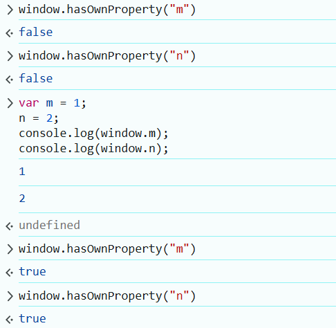

作用域、作用域链、执行上下文
作用域、作用域链、执行上下文，整理最权威的解释；之后在来点小例子，让你身临其境的感受一下
解释
这些专业术语真是……你还是看看他们是怎么说的吧。
权威
觉得下面的链接还是比较权威的，你说呢。
Kimi
下面是大名鼎鼎的
问：javascript 针对 作用域,作用域链,执行上下文 给出权威的解释
问：javascript 针对 作用域,作用域链,执行上下文 给出权威的解释,并给出出处
理解
查找父作用域
摘自维基百科：静态作用域又叫做词法作用域，采用词法作用域的变量叫词法变量。词法变量有一个在编译时静态确定的作用域。词法变量的作用域可以是一个函数或一段代码，该变量在这段代码区域内可见（visibility）；在这段区域以外该变量不可见（或无法访问）。词法作用域里，取变量的值时，会检查函数定义时的文本环境，捕捉函数定义时对该变量的绑定。
这段不是：要看函数声明的位置，不要看他被调用的位置
实战
下面就弄点小例子，让你身临其境的感受一下
示例 1
console.log(a, b);
var a = b = 2;
点击查看答案
示例 2
var m = 1;
n = 2;
console.log(window.m);
console.log(window.n);
点击查看答案

示例 3
var a = 1;
var b = 1;
function gn() {
console.log(a, b);
var a = b = 2;
console.log(a, b);
}
gn();
console.log(a, b);
点击查看答案
示例 4
var a = 1;
var obj = { name: "张三" };
function fn() {
var a2 = a;
obj2 = obj; // 意外的全局变量
a2 = a;
obj.name = "李四";
console.log(a2);
console.log(obj2);
}
fn();
console.log(a);
console.log(obj);
点击查看答案
示例 5
console.log(a, b);
if (true) {
var a = 1;
} else {
var b = 2;
}
console.log(a, b);
点击查看答案
示例 6
var a;
console.log(a);
if ("a" in window) {
a = 110;
}
console.log(a);
点击查看答案
示例 7
console.log(a);
if ("a" in window) {
var a = 110;
}
console.log(a);
点击查看答案
示例 8
var a = 100;
function fn() {
console.log(a);
return;
var a = 114;
}
fn();
点击查看答案
示例 9
function fn() {
var a = b = 114;
}
fn();
console.log(a);
console.log(b);
点击查看答案
示例 10
var n = 114;
function fn() {
console.log(n);
}
function gn() {
var n = 119;
console.log(n);
fn();
}
gn();
console.log(n);
点击查看答案